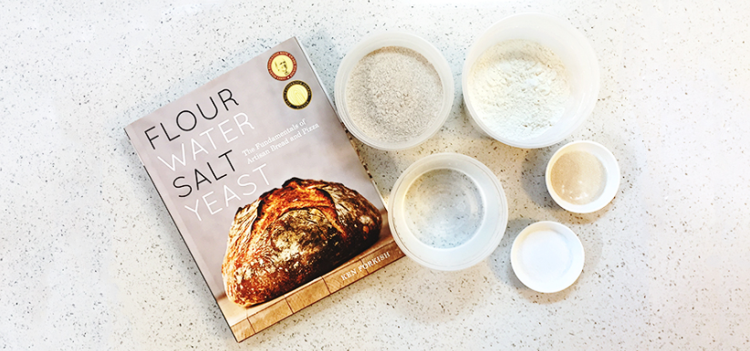

Υλικά
- 500 γρ. αλεύρι
- 300 ml νερό
- 10 γρ. αλάτι
- 5 γρ. μαγιά
Βήμα 1: Ανακάτεμα Υλικών
Σε ένα μεγάλο μπολ, ανακατέψτε το αλεύρι, το αλάτι και τη μαγιά. Προσθέστε σταδιακά το νερό και ανακατέψτε μέχρι να δημιουργηθεί μια ομοιογενής ζύμη.
Βήμα 2: Ζύμωμα
Μεταφέρετε τη ζύμη σε μια αλευρωμένη επιφάνεια και ζυμώστε για περίπου 10 λεπτά. Η ζύμη πρέπει να είναι λεία και ελαστική.
Βήμα 3: Φούσκωμα
Τοποθετήστε τη ζύμη σε ένα ελαφρώς λαδωμένο μπολ, καλύψτε την με μια πετσέτα και αφήστε την να φουσκώσει σε ζεστό μέρος για 1 ώρα, μέχρι να διπλασιαστεί σε μέγεθος.
Βήμα 4: Προθέρμανση Φούρνου
Προθερμάνετε τον φούρνο στους 220°C (428°F) για να εξασφαλίσετε ότι ο φούρνος είναι αρκετά ζεστός για να ψηθεί το ψωμί.
Βήμα 5: Ψήσιμο
Ψήστε το ψωμί για 25-30 λεπτά, ή μέχρι να αποκτήσει χρυσό καφέ χρώμα. Για να ελέγξετε αν είναι έτοιμο, χτυπήστε το κάτω μέρος του ψωμιού· αν ακούγεται κενό, είναι έτοιμο.